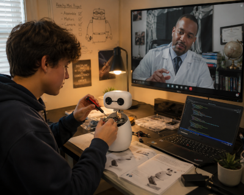

The Finley Robotics Scholarship.
Up to ten high school students per cycle are awarded a Reachy Mini robot, a year of structured mentorship, and entry into a community of practitioners building real things with real hardware.
Applications open September 1, 2026

01 — The award
Each scholar receives the following, as a single integrated package:
- A brand-new Reachy Mini robot from Pollen Robotics, theirs to keep.
- Twelve months of mentorship through monthly virtual sessions plus on-demand access between sessions.
- Membership in the active scholar cohort and the alumni network of prior cohorts.
- A published record of their projects on the Showcase page, which scholars may reference in college applications and elsewhere.
The number of scholarships awarded in a given cycle depends on the funding secured for that cycle. We would rather award fewer scholarships well than more of them badly.
02 — Eligibility
- Students entering grades 9 through 11 at the time of application.
- Demonstrated financial need or enrollment in a school without a functioning robotics program.
- Genuine interest in robotics, artificial intelligence, or creative technology.
- Curiosity, initiative, and the ability to keep working on something hard. Qualities that do not always appear on a transcript.
- Open to applicants anywhere in the United States. The robot ships and the mentorship is virtual, so where you live is not a barrier.
- Applicants under 18 need a parent or guardian to consent within the application form.
The Initiative reads applications holistically. We are not looking for finished engineers. We are looking for students who will become engineers if given access.
03 — What to submit
- Three short answers. Roughly 250 words each, typed directly into the form. Why you want to be part of this program and what draws you to robotics or AI. Something you built, fixed, taught yourself, or kept working on when it got hard. What you would want to build or explore with a Reachy Mini, and what you would do with what you learned.
- One school contact. The name, role, and email of a teacher, counselor, coach, club advisor, or program leader who can confirm you are enrolled. We contact this person only if you are a finalist, and only to confirm enrollment.
- Parent or guardian consent. Given inside the form, along with a guardian name, phone, and email.
There is nothing to upload. No transcript, no grade report, no recommendation letter, no video. Every part of the application is typed into the form itself, which means you do not need a scanner, a Google account, or a trip to the front office to apply.
04 — Selection
Three members of the board read every application independently and then confer: Dr. Irving Brown, Dr. Concetta Manker, and Kimberly Bryant. The Executive Director does not score applications. Any reviewer who knows an applicant or their family recuses from that application, and the recusal is recorded.
Each reviewer scores four criteria from 1 to 5, for 20 points in total:
- Motivation and genuine interest. Wanting to learn and build something, rather than wanting to own a device. Specific about what pulls you in.
- Self-direction and persistence. Evidence of teaching yourself, sticking with a hard thing, or building with whatever was on hand.
- Clarity of purpose. Being able to say what you want to build or explore, and why it matters to you or to people around you.
- Access gap. How much this award changes what is actually available to you.
Grades and standardized test scores are not scored. We do not collect them.
05 — Timeline
- September 1, 2026 — Applications open.
- November 30, 2026 — Submissions close.
- December 18, 2026 — All applicants notified by email.
- Early February 2027 — Hardware ships. First monthly session held.
- February 2027 – January 2028 — Program year. Monthly sessions, project work, documentation in the Showcase.
06 — Expectations of scholars
By accepting the scholarship, recipients agree to:
- Participate in at least one virtual mentorship session per month for the program year.
- Document project work and share updates on the Showcase page on a regular cadence.
- Treat the equipment with care and use it for educational purposes.
- Be honest with mentors about what is and is not working.
Scholars are encouraged to explore, fail, iterate, and ask questions. There is no single path through the program year. Curiosity decides the direction.
07 — How to apply
Applications are submitted through a single Google Form, linked below, beginning September 1, 2026. Everything is typed into the form. There are no attachments.
If you have a question the form does not answer, write to scholarship@accesstorobotics.org before you submit, or use the contact page.
The application window opens September 1, 2026 and closes November 30, 2026.